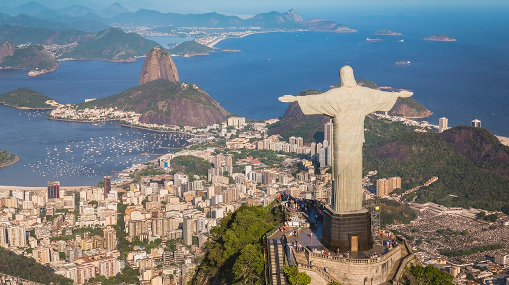
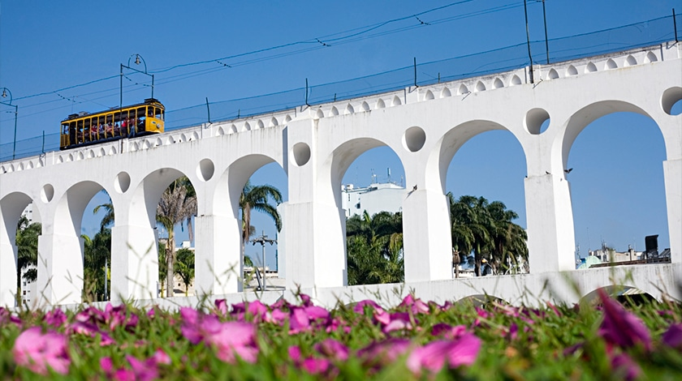
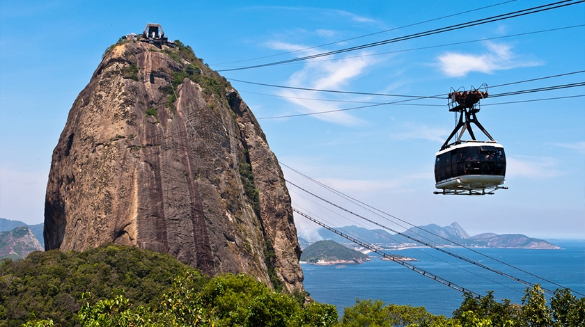

Pontos Turísticos
Cristo Redentor
No topo do morro do Corcovado, a mais de 700 m acima do nível do mar. É ali que fica um dos símbolos mais importantes não só do Rio de Janeiro, mas também doo Brasil: o Cristo Redentor. É quase impossível desassociar, por exemplo, a imagem desse ícone, inaugurado em 1931, da Cidade Maravilhosa. Em estilo art déco, a estátua foi quase toda construída no Brasil, exceto as partes da cabeça e das mãos, que foram feitas na França.
Arcos da Lapa
Na área mais boêmia do Rio de Janeiro fica também uma construção colonial que estampa sua lista de cartões-postais históricos. Na Praça Cardeal Câmara, zona central da cidade, o Aqueduto Carioca, também chamado de Arcos da Lapa, é porta de entrada do bairro da Lapa. De estilo romano, essas colunas brancas e arqueadas começaram a ser construídas no século 18 para ajudar a solucionar o problema de falta d’água vivido pela população carioca na época.
Pão de Açúcar
Um marco do Rio de Janeiro. O Pão de Açúcar é um complexo de morros que fica no bairro da Urca, abrigando tesouros naturais que são o Morro do Pão de Açúcar e o Morro da Urca. A atração é uma das mais visitadas no país, afinal garante um view espetacular da cidade. A forma mais tradicional de acessar o topo dos morros é a bordo do Bondinho, um teleférico que completou 110 anos em 2022 e é considerado referência histórica na cidade. A dica é garantir os ingressos online no site oficial da atração para, então, evitar as filas na bilheteria.